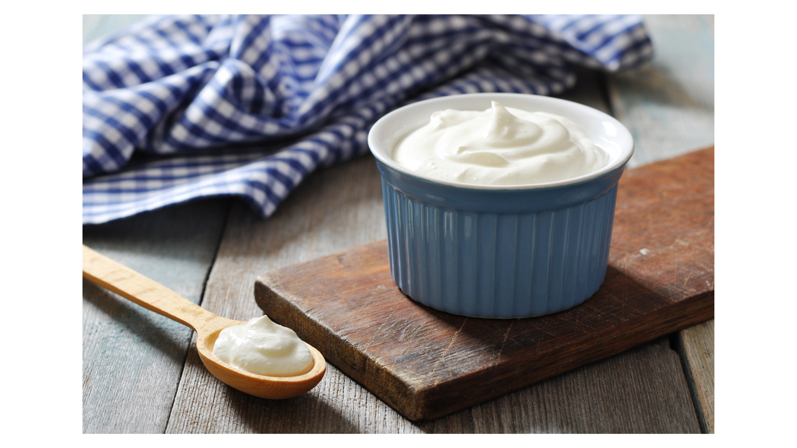

Weight loss can seem a mystery to many people, but it doesn't have to be. In
fact, the science behind weight loss is relatively straightforward. The human body is designed
to burn fuel (in the form of calories) to function properly. The excess is stored as fat when we
consume more calories than our body needs. On the other hand, when we consume fewer calories
than our body needs, our body turns to stored fat for energy, resulting in weight loss.
Many people find losing weight to be a mystery, yet deciphering its science
does not have to be difficult. The human body works on the basis of using calories as fuel to
keep its processes running. When we consume more calories than our bodies require, the excess is
stored as fat. If we consume less calories than our bodies require, our bodies will use those
fat reserves for energy, resulting in weight reduction. Understanding this fundamental function
might help to demystify the process of losing weight and creating a healthy physique.
Metabolism: Metabolism refers to the rate at which our body burns calories. Some
people have a naturally faster metabolism, which means they burn calories at a higher rate
than others. However, there are ways to boost your metabolism, such as through exercise and
eating certain foods.
Hormones: Hormones like insulin and cortisol can affect how our body stores and uses
fat. For example, high levels of insulin can promote fat storage. In contrast, high cortisol
levels (released in response to stress) can cause the body to store fat in the abdominal
area.
Diet: The type of food we eat can also impact how our body burns fat. For example, a
diet high in protein and low in carbohydrates has been shown to promote fat loss and
preserve lean muscle mass.
Exercise: Exercise is one of the most effective ways to burn fat. When we engage in
physical activity, our body burns calories for energy, which can lead to weight loss.
So, how does the body actually burn fat? When we consume fewer calories than
our
body needs, our body starts to break down fat stores to use as energy. This process is known as
lipolysis. The fatty acids released during lipolysis are transported to the liver and converted
into ketones. Ketones can then be used by the body for energy, which can help us lose weight.
It's important to note that while our body is constantly burning calories, we
can't spot-reduce fat in a specific area. For example, doing sit-ups won't necessarily lead to
fat loss in the abdominal area. Instead, we must use overall weight loss strategies (like a
healthy diet and regular exercise) to lose fat throughout the body.
Another important factor to consider is that everyone's body is different,
and
what works for one person may not work for another. Additionally, rapid weight loss can
sometimes be unhealthy and unsustainable. Focusing on long-term, sustainable lifestyle changes
rather than quick fixes or fad diets is important.
In conclusion, understanding how our body burns fat is key to achieving
successful weight loss. By focusing on factors like metabolism, hormones, diet, and exercise, we
can create a weight loss plan that works for us. It's also important to be patient and focus on
sustainable changes rather than short-term solutions. With the right approach, anyone can
achieve their weight loss goals.
Losing weight can be a challenging and daunting task, but with the right
strategies, it can be done quickly and effectively. Here are 5 proven weight loss strategies
that can help you achieve quick results.
1. Intermittent Fasting: Intermittent fasting is a popular weight loss
strategy that involves cycling between periods of eating and fasting. By limiting your eating
window, you can reduce your overall caloric intake, which can lead to weight loss. One of the
most popular forms of intermittent fasting is the 16/8 method, which involves fasting for 16
hours and eating during an 8-hour window. Other methods include alternate-day fasting and the
5:2 diet. However, it's important to note that intermittent fasting may not be suitable for
everyone, especially those with certain medical conditions.
2. High-Intensity Interval Training: High-intensity interval training
(HIIT) is a type of exercise that involves short bursts of intense exercise followed by periods
of rest or low-intensity exercise. HIIT has been shown to be one of the most effective forms of
exercise for weight loss because it can help you burn a lot of calories in a short amount of
time. Plus, it can continue to burn calories even after you've finished exercising. HIIT can be
done with a variety of exercises, including running, cycling, and bodyweight exercises.
3. Low-Carb Diets: Low-carb diets are another effective weight loss
strategy. By reducing your intake of carbohydrates, your body is forced to use stored fat for
energy, which can lead to weight loss. Some popular low-carb diets include the ketogenic diet
and the Atkins diet. However, it's important to choose healthy sources of protein and fat, as
some low-carb diets can be high in saturated fat and cholesterol.
4. Drinking Water for Weight Loss: Drinking water is essential for overall
health, but it can also aid in weight loss. Drinking water before meals can help you feel full,
which can lead to consuming fewer calories overall. Plus, drinking water can help your body burn
calories more efficiently. Aim to drink at least 8 glasses of water per day, and try to replace
sugary drinks with water whenever possible.
5. Tracking Progress: Finally, one of the most important weight loss
strategies is tracking your progress. Whether it's weighing yourself regularly, measuring your
body fat percentage, or keeping a food diary, tracking your progress can help you stay motivated
and accountable. Plus, it can help you identify areas where you might need to make changes to
your diet or exercise routine.
In conclusion, these 5 proven weight loss strategies can help you achieve
quick and sustainable weight loss. However, it's important to remember that everyone's body is
different, and what works for one person may not work for another. Consult with your doctor or a
registered dietitian to develop a weight loss plan that's tailored to your individual needs and
goals.
Intermittent fasting is a popular weight loss method involving cycling
between fasting and eating. It has gained popularity in recent years due to its potential
for
fast and effective weight loss and other health benefits. If you're a beginner looking to
try
intermittent fasting, here is a beginner's guide to getting you started on your weight loss
journey.
1. Choose a Fasting Schedule: There are several different types of
intermittent fasting schedules, so finding one that works for you is important. One popular
method is the 16/8 method, which involves fasting for 16 hours and eating during an 8-hour
window. Another method is the 5:2 diet, which involves eating normally for 5 days and
restricting calorie intake to 500-600 calories for 2 non-consecutive days. Choose a fasting
schedule that fits your lifestyle and schedule.
2. Stay Hydrated: During fasting periods, it's important to stay
hydrated
by drinking water or other non-caloric beverages. This can help reduce hunger and keep you
feeling fuller for longer periods.
3. Eat Nutrient-Dense Foods: When you are not fasting, it's important
to
focus on eating nutrient-dense foods that will provide your body with the necessary vitamins
and
minerals. This includes fruits, vegetables, whole grains, lean protein, and healthy fats.
4. Avoid Processed Foods: Processed foods are often high in calories,
sugar, and unhealthy fats and can sabotage your weight loss efforts. Avoid processed foods
as
much as possible and focus on whole, unprocessed foods.
5. Be Patient: Intermittent fasting can be a powerful weight loss
tool,
but it's important to be patient and stick with it. Results may not be immediate, but you
should
see progress in your weight loss journey over time.
6. Exercise Regularly: Regular exercise is an important part of any
weight
loss plan, including intermittent fasting. Aim for at least 30 minutes of moderate-intensity
exercise most days of the week to help boost weight loss and improve overall health.
7. Seek Professional Advice: If you have any medical conditions or
concerns about starting an intermittent fasting plan, it's important to seek professional
advice
from your healthcare provider. They can help you determine if intermittent fasting is safe
and
appropriate for you.
In conclusion, intermittent fasting can be an effective weight loss
method
for beginners. By choosing a fasting schedule that fits your lifestyle, staying hydrated,
eating
nutrient-dense foods, avoiding processed foods, being patient, exercising regularly, and
seeking
professional Advice, you can achieve your weight loss goals and improve your overall health.
Losing weight can be challenging, and finding the right foods to help you
achieve your goals can be overwhelming. However, certain foods can help speed up weight loss
by
boosting your metabolism, suppressing your appetite, and reducing inflammation. Here are the
top
10 foods to eat for fast weight loss:
1. Avocado: Avocado is a nutrient-dense food high in monounsaturated
fats,
fibre, and potassium. These nutrients can help to reduce inflammation in the body and
promote
weight loss by suppressing appetite and reducing the risk of insulin resistance.
2. Eggs: Eggs are a great source of Protein, which can help to reduce
cravings and promote feelings of fullness. They also contain essential amino acids that
support
muscle growth and repair, which can help to boost your metabolism and burn more calories.
3. Leafy Greens: Leafy greens, such as spinach, kale, and arugula, are
low
in calories and fibre, making them an excellent weight-loss food. They also contain various
vitamins and minerals that can help reduce inflammation in the body and support overall
health.
4. Berries: Berries, such as blueberries, raspberries, and
strawberries,
are packed with antioxidants and fibre, which can help to reduce inflammation in the body
and
promote weight loss by suppressing appetite and reducing insulin resistance.
5. Greek Yogurt: Greek Yogurt is an excellent source of Protein, which
can
help to reduce cravings and promote feelings of fullness. It also contains probiotics, which
can
support gut health and reduce inflammation.

6. Lean Protein: Lean Protein, such as chicken, turkey, and fish, can
help
to reduce cravings and promote feelings of fullness. It also supports muscle growth and
repair,
which can help to boost your metabolism and burn more calories.
7. Nuts and Seeds: Nuts and seeds, such as almonds, walnuts, and chia
seeds, are high in Protein, fibre, and healthy fats, making them an excellent food for
weight
loss. They also contain various vitamins and minerals that can help reduce inflammation in
the
body.
8. Quinoa: Quinoa is a gluten-free grain high in Protein and fibre,
making
it an excellent food for weight loss. It also contains various vitamins and minerals that
can
help reduce inflammation in the body and support overall health.
9. Green Tea: Green Tea is a natural source of caffeine and
antioxidants,
which can help to boost your metabolism and promote weight loss. It also contains other
compounds that can reduce inflammation and support overall health.
10. Spices: Spices, such as cayenne pepper, turmeric, and cinnamon,
can
help boost your metabolism and promote weight loss by reducing inflammation. They also add
flavour to your meals without adding extra calories.
Incorporating these top 10 foods into your diet can help you achieve fast
weight loss results. However, it's important to remember that weight loss is a journey and
requires a holistic approach, including regular exercise, stress management, and getting
enough
sleep. It's also important to listen to your body and ensure you are fueling it with the
nutrients it needs.
Additionally, it's important to remember that weight loss is not a
one-size-fits-all solution, and what works for one person may not work for another. It's
essential to consult with a healthcare professional before making any significant changes to
your diet or exercise routine.
Weight loss is a topic that has gained much attention over the years.
With
the increasing rate of obesity and related health problems, many people are turning to
weight
loss products to help them shed extra pounds. However, the question remains: do weight loss
products really work? In this article, we will look at the evidence surrounding weight loss
products and determine whether they are truly effective.
There are numerous weight loss products available in the market, ranging
from
supplements to meal replacement shakes to fitness equipment. While some of these products
may
help with weight loss, most are ineffective or have harmful side effects. For instance, many
weight loss supplements contain ingredients not backed by scientific evidence and can cause
serious health problems. In addition, meal replacement shakes often lack the essential
nutrients
for good health. Fitness equipment can be expensive and difficult to use. That being said,
there
are some weight loss products that are effective.
It is important to note, however, that even effective weight loss
products
are
not a magic solution for weight loss. Sustainable weight loss requires a combination of
healthy
eating habits, regular exercise, and a commitment to lifestyle changes. In fact, relying too
heavily on weight loss products can be counterproductive, creating a false sense of security
and
leading to unhealthy habits.
Another factor to consider when evaluating the effectiveness of weight
loss
products is the role of the placebo effect. Many studies have shown that people who believe
they
are taking an effective weight loss product are more likely to experience weight loss, even
if
it is a placebo. This highlights the importance of conducting rigorous, double-blind studies
to
determine the true effectiveness of weight loss products.
In addition to the potential effects of weight loss products, it is also
important to consider their safety. Many weight loss products, particularly supplements, are
not
regulated by the Food and Drug Administration (FDA) and may contain harmful ingredients. It
is
important to do thorough research and consult with a healthcare professional before taking
any
weight loss product to ensure it is safe and effective.
In conclusion, while there are some weight loss products that are
effective,
the
majority of products on the market are either ineffective or have harmful side effects.
Sustainable weight loss requires a combination of healthy eating habits, regular exercise,
and a
commitment to lifestyle changes. It is important to do thorough research and consult with a
healthcare professional before taking any weight loss product to ensure it is safe and
effective.
Ultimately, the best way to achieve and maintain a healthy weight is
through
a balanced diet and regular exercise. While weight loss products may provide some
assistance,
they are not a magic solution for weight loss and should not be relied upon as such.
Instead,
focus on developing sustainable habits that promote good health and well-being.
Weight loss can be challenging, and it's easy to get caught up in myths
and
misinformation about what works and what doesn't. Unfortunately, some of these myths can
sabotage your progress and make reaching your weight loss goals harder. In this article,
we'll
take a look at 7 weight loss myths that you need to stop believing right now.
Myth 1: You Have to Cut Out Carbs Completely to Lose weight Carbs
have gotten a bad reputation in recent years, and many people believe that cutting them out
ultimately is the key to weight loss. While reducing your carb intake can be helpful for
some
people, it's unnecessary to cut them out completely. In fact, carbs are an essential source
of
energy for your body, and cutting them out altogether can leave you feeling tired and
sluggish.
Instead of cutting carbs out completely, focus on reducing your intake of refined carbs
(like
white bread and sugary drinks) and choosing healthier carb sources like fruits, vegetables,
and
whole grains.
Myth 2: Skipping Meals Will Help You Lose Weight It's a common
misconception that skipping meals is an effective weight loss strategy. While reducing your
overall calorie intake is vital for weight loss, skipping meals can have the opposite
effect.
Skipping meals makes you more likely to overeat later in the day, which can lead to weight
gain.
Additionally, skipping meals can slow your metabolism, making it harder to burn calories
throughout the day. Instead of skipping meals, focus on eating smaller, more frequent meals
throughout the day to keep your metabolism revved up and prevent overeating.
Myth 3: Fat-Free Foods Are Always Healthier Many people assume
that
fat-free foods are automatically healthier than their full-fat counterparts. While it's true
that some high-fat foods (like fried foods and desserts) can be unhealthy, not all fat is
created equal. In fact, some healthy fats (like those found in nuts, seeds, and avocados)
can
help you lose weight by keeping you full and satisfied. Additionally, many fat-free foods
are
loaded with added sugars and other unhealthy ingredients to compensate for the lack of fat.
Instead of focusing on fat-free foods, aim for a balanced diet with healthy fat sources and
plenty of fruits, vegetables, and lean protein.
Myth 4: Weight Loss Supplements Are a Magic Solution It's tempting
to
believe that taking a weight loss supplement can provide a quick fix for your weight loss
woes.
Unfortunately, most weight loss supplements are not only ineffective, but they can also be
harmful to your health. Many supplements are not regulated by the FDA, meaning you need to
know
what you're putting into your body. Additionally, many weight loss supplements are loaded
with
caffeine and other stimulants, which can cause jitters, anxiety, and other adverse side
effects.
Instead of relying on supplements, focus on making healthy lifestyle changes like eating a
balanced diet and exercising regularly.
Myth 5: You Need to Exercise for Hours a Day to See Results Many
people believe that you need to spend hours in the gym every day to see results. While
exercise
is vital for weight loss, you don't need to spend hours working out. In fact, short, intense
workouts can be just as effective (if not more so) than longer, low-intensity activities.
By debunking these common weight loss myths, you can progress towards
your
weight loss goals safely and effectively. Remember, there's no one-size-fits-all
approach to
weight loss; what works for one person may not work for another. The key is to focus on
making
healthy lifestyle changes that you can stick with over the long term. With time,
patience, and
persistence, you can achieve your weight loss goals and improve your overall health and
well-being.
When it comes to weight loss, countless methods and programs out
there
promise quick and effective results. However, not all weight loss methods are created
equal, and
it can be difficult to determine the most effective for you. In this article, we'll take
a
closer look at some of the most popular weight loss methods and programs and examine
their
effectiveness and safety.
1. Calorie Restriction: Calorie restriction is a common weight
loss method
that reduces your daily calorie intake. While it can be effective for short-term weight
loss,
studies have shown that it can also slow your metabolism and make it harder to maintain
weight
loss over the long term.
2. Low-Carb Diets: Low-carb diets have become increasingly popular
in
recent years, with many people claiming they are an effective way to lose weight. While
they can
lead to rapid weight loss in the short term, they may not be sustainable over the long
term and
can lead to nutrient deficiencies.
3. Intermittent fasting: Intermittent fasting involves alternating
periods
of Eating and fasting. While some studies have shown it to be effective for weight loss
and
improving overall health, it may not be appropriate for everyone, particularly those
with a
history of disordered eating or certain medical conditions.
4. Weight Loss Programs: Numerous weight loss programs are
available, such
as Weight Watchers, Jenny Craig, and Nutrisystem. While these programs can be effective
for
weight loss, they often require a significant financial investment. They may need to be
more
sustainable over the long term.
5. Exercise: Exercise is important to any weight loss program. It
can help
boost metabolism, burn calories, and build muscle mass. However, it may not be effective
for
significant weight loss. It should be combined with dietary changes for the best
results.
6. Bariatric Surgery: Bariatric Surgery is a weight loss method
that
involves reducing the size of the stomach or bypassing a portion of the small intestine.
While
it can be effective for significant weight loss, it is a major surgical procedure and
should
only be considered as a last resort for those who have not been able to achieve weight
loss
through other methods.
7. Mindful Eating: Mindful Eating involves paying attention to
your body's
hunger and fullness signals and eating in a mindful and intentional way. While it may
not lead
to rapid weight loss, it can effectively sustain weight loss and improve overall health
and
well-being.
So, what is the most effective weight loss method or program? The
truth is
that there is no one-size-fits-all answer. The most effective weight loss method for you
will
depend on various factors, including your lifestyle, medical history, and personal
preferences.
It's important to work with a healthcare professional or registered dietitian to
determine the
best approach for you and focus on making sustainable lifestyle changes you can maintain
over
the long term. With time, patience, and persistence, you can achieve your weight loss
goals and
improve your overall health and well-being.
Some links on this health and fitness blog may be affiliate links. We only
recommend
products and services. We've personally used it. Any commission received helps maintain this site.
This
site is not intended to provide medical or financial advice and is for entertainment only. Please
consult a healthcare professional before making significant changes to your health practices. Read
our affiliate disclosure in our privacy policy.
 13 February, 2023 @ 11:21 PMPublished Date &
Time |
13 February, 2023 @ 11:21 PMPublished Date &
Time |